Пояс с бляшками Сааремаа
belt:saaremaa 32 × 32
32 × 32
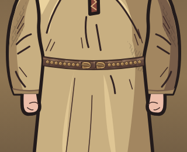
До и после
Пояс обнаружен под левым бедром погребённой, а не зафиксирован надетым на ней; погребение предположительно относится к середине XIII века.
Тканый пояс с узлом
belt:woven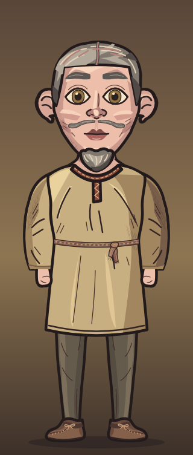
32 × 32
До и после
Реконструкция относится к женскому костюму Сиксаля XIII–XIV веков, а не к Новгороду; пояс показан на современной модели.
Тканый пояс или тесьма
gm_ac002 32 × 32
До и после
Это женский костюм из Южной Эстонии XIII–XIV веков, а не новгородский предмет; тканый пояс реконструирован по фрагментам.
Детский пояс
gm_gc006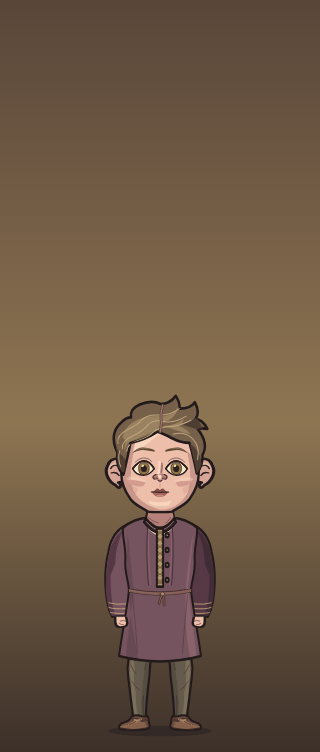
32 × 32
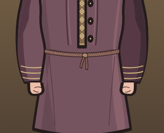
До и после
До После
После Это болгарское погребение XIV века; найденный 2,12-метровый пояс, вероятно, был взрослым и, по статье, скорее всего не носился мальчиком при жизни. Он богато украшен металлическими накладками, а не соответствует простому новгородскому детскому поясу.
Тканевый кошелёк с завязкой
it_ps_cloth_purse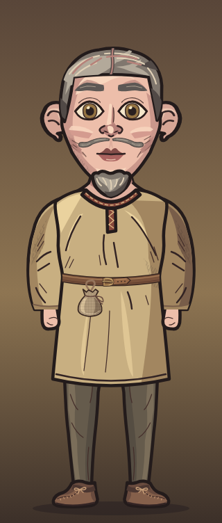
32 × 32
До и после
Лондон, поздний XIII век; кожа с шёлковой подкладкой вместо льна или шерсти, и находка не из Руси.
Мешочек для мелочей
it_ps_small_bag 32 × 32
До и после
—
Дорожный мешок
it_ps_travel_bag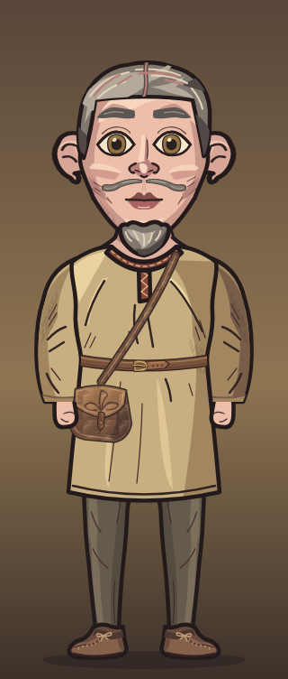
32 × 32
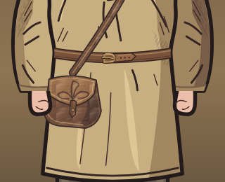
До и после
В источнике только орнаментированный фрагмент сумы XIV–XV вв.; объём, ремень и полный крой условны. Ограничение источника: Источник XIV–XV веков показывает фрагмент украшенной сумы, а не целый дорожный мешок.
Мягкий кожаный пояс
belt:leather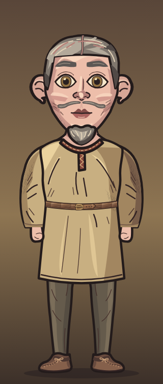
32 × 32
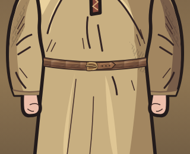
До и после
Лондон, XIV век; изображён пояс с накладками и пряжкой, а игровой предмет описан как простой кожаный.
Круглый кисет на завязке
belt_pouch:drawstring 32 × 32
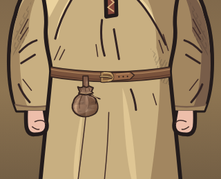
До и после
Лондон, поздний XIII век; кошель кожаный с шёлковой подкладкой, а не новгородская находка.
Простой кожаный пояс
gm_ac001 32 × 32
До и после
Лондон, XIV век; у музейного фрагмента есть металлическая отделка, которой нет у простого кожаного пояса.
Поясной набор с накладками
gm_ac005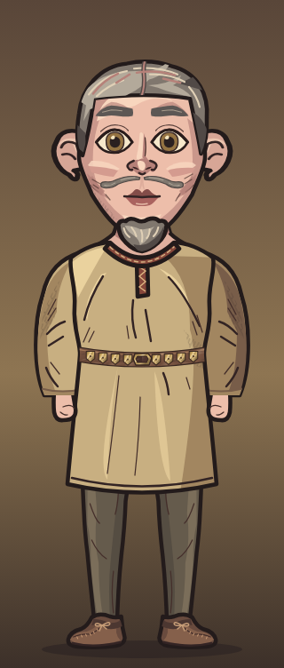
32 × 32
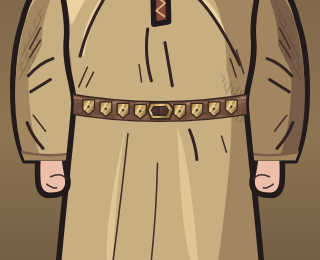
До и после
Лондон, XIV век; показан отдельный поясной фрагмент с другими формами накладок, а не полный новгородский набор.
Поясная кожаная сумка с клапаном
it_ps_belt_pouch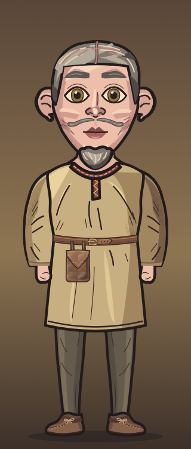
32 × 32
До и после
Отдельный силуэт по простому острому клапану изображения; без добавления тиснёного растительного узора.
Малый кожаный кошель с завязкой
it_ps_leather_purse 32 × 32
До и после
—
Мешочек для гирек
it_ps_weight_bag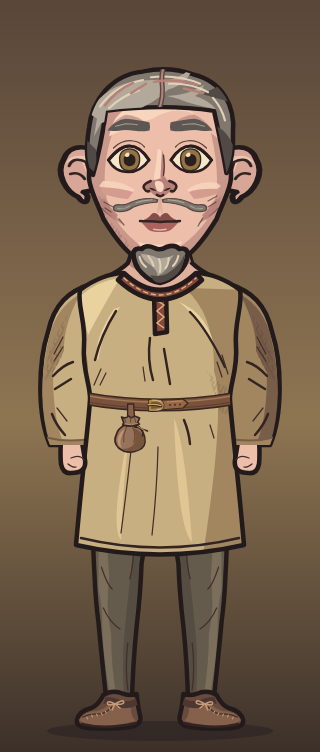
32 × 32
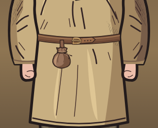
Новгород, XII–XV века; на находке нет гирек и источник не связывает мешочек с весами.
Кожаная купеческая сумка западной работы
it_ps_western_bag 32 × 32
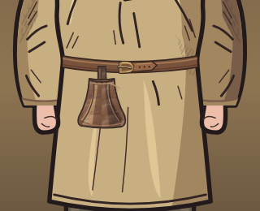
До и после
Маленький кошель XV века; западное изготовление предположительно, купеческая функция не установлена. Ограничение источника: Источник XV века показывает небольшой кошель, а не купеческую сумку.
кожаный пояс
leather_belt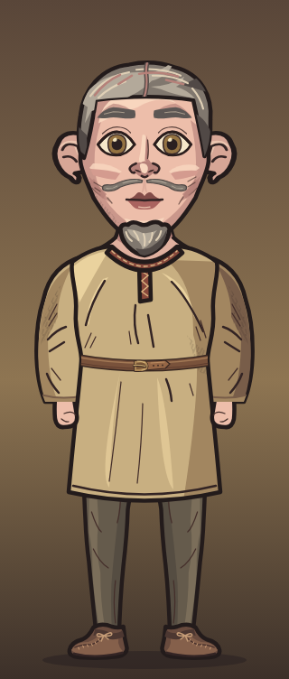
32 × 32
Это фрагмент длиной 40,3 см, а не целый пояс; музей ставит вопросительный знак в названии предмета.
кожаный кошель
leather_pouch 32 × 32
До и после
Кошель из Старой Руссы XII–XIII вв.; способ крепления к поясу условен.
перевязь оружия через плечо
wp_baldric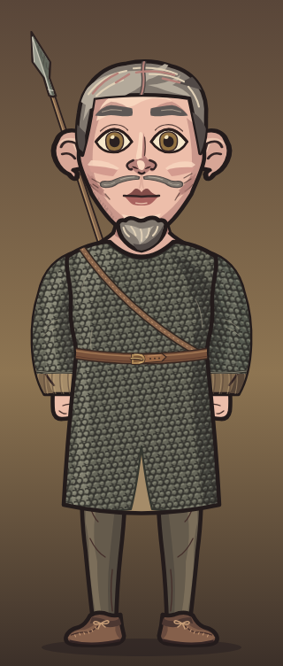
 32 × 32
32 × 32
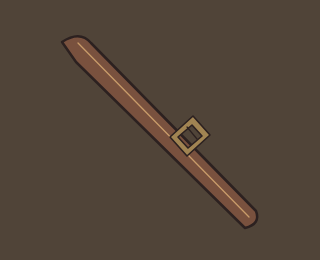
Ближайшая проверенная миниатюра показывает мечи в ножнах у пояса, но лямка через плечо не различима; для неё не использована. Ограничение источника: В INDEX нет фотографии перевязи через плечо.
мечевой пояс с подвесом ножен
wp_sword_belt
32 × 32
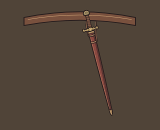
Это западноевропейская сцена середины XIII века, а не новгородский образец; ремни и точный способ подвеса ножен на миниатюре не прорисованы.
Новгородская сумка с тиснёным клапаном
belt_pouch:novgorod_flap 32 × 32
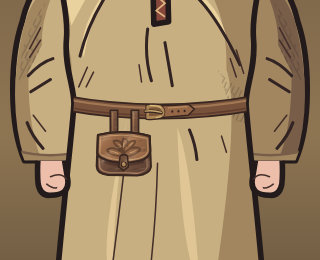
До и после
Форма и клапан показаны в новгородской выборке, но тиснёный орнамент на этом рисунке не виден; индивидуальная дата экземпляра не приведена.
Мягкий кошель со складками
belt_pouch:pleated 32 × 32
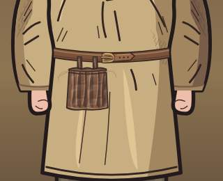
До и после
Прямоугольный плоский силуэт по фотографии, складки и подвес к поясу стилизованы.